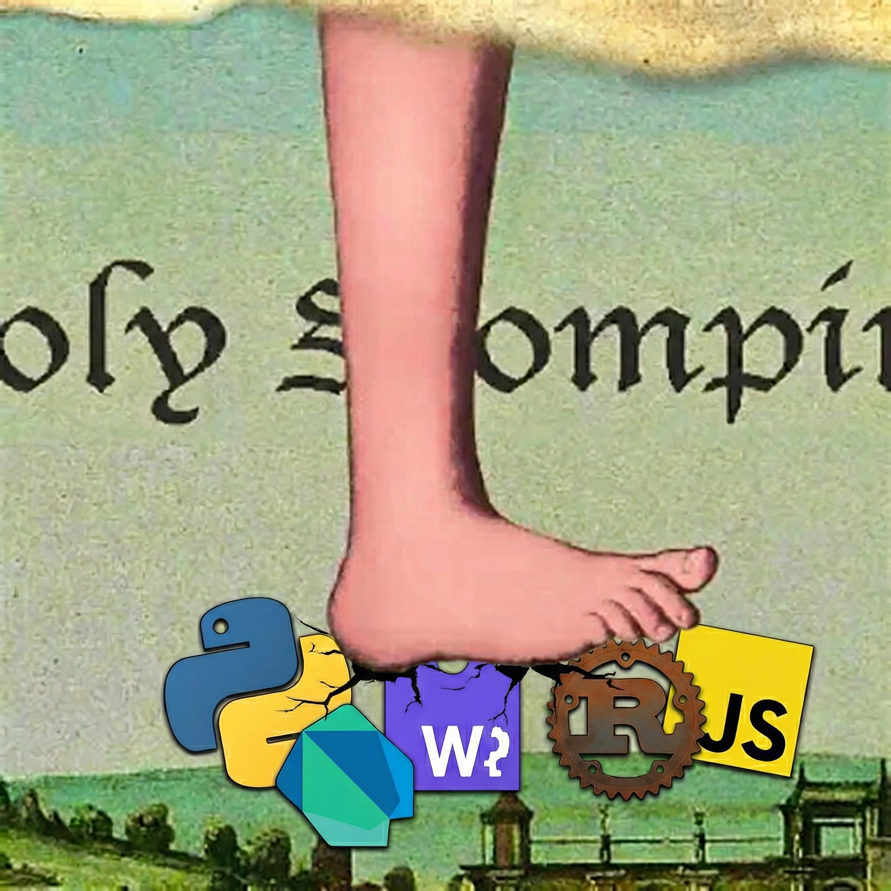

Sandboxed Python for Dart & Flutter.
Same code. Every platform.
dart pub add dart_monty

holy stompin'LLMs write Python. Your app runs on Dart. That gap kills you. Every agent framework, every code-generating model, every automation pipeline produces Python—and your Flutter app can't run it. Until now.
When an LLM writes code to answer a question, transform data, or call a tool—it writes Python. dart_monty lets your Dart and Flutter apps execute that code directly, in-process, without a server round-trip. The LLM writes 35 lines of glue. Monty runs it. Your host functions provide the domain logic. The agent loop closes locally.
You want users to write scripts, formulas, automations—but you can't let arbitrary code
touch the filesystem, the network, or memory you don't control. Monty's Python subset has
no import, no eval(), no I/O. The sandbox isn't a policy layer bolted on top.
It's the interpreter itself. There is no escape because there is nothing to escape to.
Most cross-platform stories are "write once, hope for the best." dart_monty has an 11-tier test suite that runs the same JSON fixtures on native FFI and browser WASM, diffs the JSONL output, and fails CI on any divergence. Parity isn't a goal. It's a gate. You don't ship if native and web disagree.
dart_monty wraps Monty—Pydantic's tree-walking Python interpreter written in Rust—in pure Dart bindings. Native desktop uses FFI. Web uses WASM in a Worker. Mobile gets Isolate-based execution. Your code doesn't change. The platform does. We maintain a fork with patches for cancellation and FFI safety until they land upstream.
The entire platform interface is pure Dart. Use it in CLI tools, servers, or Flutter apps. No widget tree required.
No file I/O. No network. No eval(). No import. Monty executes a Python subset that can't escape its sandbox. The interpreter IS the security model.
Conditional imports choose FFI or WASM at compile time. Zero runtime overhead. Zero platform checks. Monty() just works.
Python calls your Dart functions. Execution pauses, your host resolves the call, execution resumes. Full async bridge with typed schemas.
Six error subtypes. Exhaustive pattern matching. Rust panics caught at the FFI boundary, never crashing your app. Every failure path is typed.
Freeze execution state. Serialize it. Restore it later. Stateful sessions that survive app restarts, powered by Monty's snapshot protocol.
Four packages form the core. A platform interface defines the contract. Two backends implement it. A bridge layer adds plugins and streaming. Everything is pure Dart.
graph TD
subgraph APP["Your Application"]
A["dart_monty
App-facing API"]
end
subgraph CORE["Platform Contract"]
PI["dart_monty_platform_interface
Pure Dart • MontyPlatform • SPI"]
end
subgraph BACKENDS["Backend Implementations"]
FFI["dart_monty_ffi
dart:ffi → Rust shared lib"]
WASM["dart_monty_wasm
dart:js_interop → Web Worker"]
end
subgraph BRIDGE["Orchestration"]
BR["dart_monty_bridge
Plugins • Streaming • Events"]
end
subgraph WRAPPERS["Platform Wrappers"]
NAT["dart_monty_native
Isolate-based"]
WEB["dart_monty_web
pub.dev web plugin"]
end
subgraph TOOLS["Developer Tools"]
CLI["monty_cli
CLI tool"]
MCP["dart_monty_mcp
MCP server"]
end
A --> PI
A --> BR
FFI --> PI
WASM --> PI
BR --> PI
NAT --> FFI
WEB --> WASM
CLI --> A
MCP --> BR
style APP fill:#1a1a2e,stroke:#569cd6,stroke-width:2px
style CORE fill:#1a1a2e,stroke:#c586c0,stroke-width:2px
style BACKENDS fill:#1a1a2e,stroke:#6a9955,stroke-width:2px
style BRIDGE fill:#1a1a2e,stroke:#dcdcaa,stroke-width:2px
style WRAPPERS fill:#1a1a2e,stroke:#4ec9b0,stroke-width:1px
style TOOLS fill:#1a1a2e,stroke:#808080,stroke-width:1px
graph LR
D["Dart App"] --> MI["MontyNative
Isolate"]
MI --> MF["MontyFfi
dart:ffi"]
MF --> LIB["libdart_monty
.dylib / .so / .dll"]
LIB --> MONTY["Monty
Rust interpreter"]
style D fill:#1a1a2e,stroke:#569cd6
style MI fill:#1a1a2e,stroke:#4ec9b0
style MF fill:#1a1a2e,stroke:#6a9955
style LIB fill:#1a1a2e,stroke:#dcdcaa
style MONTY fill:#1a1a2e,stroke:#c586c0,stroke-width:2px
FFI calls are synchronous. The Isolate wrapper runs them off the main thread—your UI never freezes, even on 500ms Python executions.
graph LR
D["Dart
compiled to JS"] --> JS["js_interop
monty_glue.js"]
JS --> W["Web Worker"]
W --> WASM["Monty WASM
wasm32-wasip1"]
style D fill:#1a1a2e,stroke:#569cd6
style JS fill:#1a1a2e,stroke:#dcdcaa
style W fill:#1a1a2e,stroke:#4ec9b0
style WASM fill:#1a1a2e,stroke:#c586c0,stroke-width:2px
Chrome's 8MB sync compile limit means WASM must live in a Worker. Each session gets its
own Worker—preemptive kill via Worker.terminate().
Every Monty session follows a deterministic state machine. MontyStateMixin enforces
valid transitions at the type level. No invalid states. No race conditions. No surprises.
stateDiagram-v2
[*] --> Idle : create()
Idle --> Idle : run() — one-shot execution
Idle --> Active : start() — iterative execution
Active --> Active : resume() — pending result
Active --> Idle : resume() — complete result
Active --> Idle : cancel()
Idle --> Disposed : dispose()
Active --> Disposed : dispose()
Disposed --> [*]
note right of Active
Python pauses on host function call.
Dart resolves. Execution resumes.
end note
graph TD
ME["MontyError
sealed class"]
ME --> MSE["MontyScriptError
Python raised an exception"]
ME --> MCE["MontyCancelledError
Cooperative cancellation"]
ME --> MRE["MontyResourceError
Limits exceeded"]
ME --> MPE["MontyPanicError
Rust panic caught at FFI"]
ME --> MCRE["MontyCrashError
Unexpected crash"]
ME --> MDE["MontyDisposedError
Used after dispose"]
style ME fill:#1a1a2e,stroke:#f44747,stroke-width:2px
style MSE fill:#1a1a2e,stroke:#dcdcaa
style MCE fill:#1a1a2e,stroke:#c586c0
style MRE fill:#1a1a2e,stroke:#ce9178
style MPE fill:#1a1a2e,stroke:#f44747
style MCRE fill:#1a1a2e,stroke:#f44747
style MDE fill:#1a1a2e,stroke:#808080
11 tiers of JSON test fixtures. Every tier runs on native FFI AND WASM. Results are diffed as JSONL. Zero divergences on logic. This is how you prove cross-platform parity—not with hope, but with evidence.
1 + 2, "hello", arithmetic, string ops
x = 42, assignment, lookup, scope
if, while, break, continue
def greet(name):, closures, recursion
NameError, TypeError, ZeroDivisionError
Host function calls, pause/resume protocol
greet(name="world"), positional + keyword
try/except/finally, traceback
External functions resolving as futures
__name__, source attribution, metadata
Unicode, empty programs, max recursion, limits
Every Rust FFI function is wrapped in ffi_progress!—a macro that catches panics
via std::panic::catch_unwind, checks null pointers, and writes errors to caller-provided
buffers. Rust panics become typed Dart errors, never process crashes. This is the pattern that
should be standard for any Dart-Rust embedding.
// Every FFI entry point. Every time. ffi_progress!(handle, out_error, |h| { // Null check on handle pointer // Panic containment via catch_unwind // Error written to out-parameter h.process_progress(code, external_fns) });
MontyCancelToken wraps an Arc<AtomicBool> checked in Monty's bytecode loop.
Cooperative cancellation without preemption. On web, Worker.terminate() gives you true
preemptive kill. Zombie tracking handles FFI calls that outlive their timeout.
final token = await monty.cancelToken(); // From another isolate or timer: await monty.cancel(token); // Result is MontyCancelledError switch (error) { MontyCancelledError() => print('whipped it'), MontyScriptError(:final exception) => handleErr(exception), }
Group host functions into namespaced plugins. The registry validates collisions at registration time,
not at runtime. Python code can call list_functions() and help("fn_name")
to discover what's available. Introspection is auto-generated.
class WeatherPlugin extends MontyPlugin { String get namespace => 'weather'; List<HostFunction> get functions => [ HostFunction( schema: const HostFunctionSchema( name: 'get_forecast', params: [HostParam(name: 'city')], ), handler: (args) async => fetchWeather(args['city']), ), ]; }
start() begins execution. When Python hits a host function call, execution
pauses—returning a MontyPending with the function name and arguments.
Your Dart code resolves it. resume() continues from exactly where it stopped.
This loop is the beating heart of dart_monty.
sequenceDiagram
participant App as Dart App
participant M as Monty
participant PY as Python Code
App->>M: start(code)
M->>PY: execute
PY->>M: call host_fn("get_data", args)
M-->>App: MontyPending{name, args}
Note over App: resolve async
App->>M: resume(result)
M->>PY: inject result, continue
PY->>M: return final_value
M-->>App: MontyComplete{value}
The native Rust crate exposes a minimal C ABI surface. Four source files. A state machine with 7 handle variants. Bidirectional JSON serialization for all values. No leaked pointers. No unwound panics.
graph LR
subgraph DART["Dart Side"]
NB["NativeBindingsFfi
dart:ffi pointers"]
end
subgraph FFI["C ABI Boundary"]
direction TB
CREATE["monty_create()"]
RUN["monty_run()"]
START["monty_start()"]
RESUME["monty_resume()"]
SNAP["monty_snapshot()"]
RESTORE["monty_restore()"]
CANCEL["monty_cancel()"]
FREE["monty_free()"]
end
subgraph RUST["Rust Side"]
HANDLE["MontyHandle
state machine"]
PROC["process_progress()
generic dispatch"]
CONV["convert.rs
MontyObject ↔ JSON"]
ERR["error.rs
catch_unwind"]
end
NB --> CREATE
NB --> RUN
NB --> START
NB --> RESUME
NB --> SNAP
NB --> CANCEL
NB --> FREE
CREATE --> HANDLE
RUN --> PROC
START --> PROC
RESUME --> PROC
PROC --> CONV
PROC --> ERR
style DART fill:#1a1a2e,stroke:#569cd6,stroke-width:2px
style FFI fill:#1a1a2e,stroke:#dcdcaa,stroke-width:2px
style RUST fill:#1a1a2e,stroke:#c586c0,stroke-width:2px
The platform interface exports two barrel files: the public API for apps, and the SPI for backend implementers. This separation prevents accidental coupling between app code and implementation details.
graph TB
subgraph PUBLIC["dart_monty_platform_interface.dart
Public API — apps import this"]
MP["MontyPlatform"]
MR["MontyResult"]
MERR["MontyError (sealed)"]
MS["MontySession"]
ML["MontyLimits"]
MCT["MontyCancelToken"]
end
subgraph SPI["monty_backend_spi.dart
SPI — backends only"]
BMP["BaseMontyPlatform"]
MCB["MontyCoreBindings"]
MSM["MontyStateMixin"]
MSC["MontySnapshotCapable"]
MFC["MontyFutureCapable"]
end
FFI_PKG["dart_monty_ffi"] --> SPI
WASM_PKG["dart_monty_wasm"] --> SPI
APP["Your App"] --> PUBLIC
BRIDGE["dart_monty_bridge"] --> PUBLIC
APP -.-x SPI
BRIDGE -.-x SPI
style PUBLIC fill:#1a1a2e,stroke:#569cd6,stroke-width:2px
style SPI fill:#1a1a2e,stroke:#c586c0,stroke-width:2px
style APP fill:#1a1a2e,stroke:#6a9955
style FFI_PKG fill:#1a1a2e,stroke:#6a9955
style WASM_PKG fill:#1a1a2e,stroke:#6a9955
style BRIDGE fill:#1a1a2e,stroke:#dcdcaa
The bridge layer wraps the raw start/resume loop into a streaming event pipeline.
Plugins register host functions. The registry auto-generates list_functions()
and help() for runtime introspection.
graph TB
subgraph BRIDGE["DefaultMontyBridge"]
LOOP["Start / Resume Loop"]
STREAM["Stream<BridgeEvent>"]
end
subgraph REGISTRY["PluginRegistry"]
REG["register()"]
VALID["Collision detection"]
INTRO["Auto introspection"]
end
subgraph PLUGINS["Your Plugins"]
P1["WeatherPlugin
weather.get_forecast"]
P2["StockPlugin
stock.get_price"]
P3["MathPlugin
math.solve"]
end
subgraph EVENTS["BridgeEvent (sealed)"]
TC["BridgeToolCallResult"]
TX["BridgeTextContent"]
FIN["BridgeRunFinished"]
end
P1 --> REG
P2 --> REG
P3 --> REG
REG --> VALID
VALID --> INTRO
REGISTRY --> BRIDGE
LOOP --> STREAM
STREAM --> TC
STREAM --> TX
STREAM --> FIN
style BRIDGE fill:#1a1a2e,stroke:#dcdcaa,stroke-width:2px
style REGISTRY fill:#1a1a2e,stroke:#c586c0,stroke-width:2px
style PLUGINS fill:#1a1a2e,stroke:#6a9955,stroke-width:2px
style EVENTS fill:#1a1a2e,stroke:#569cd6,stroke-width:2px
PluginRef<T> lets a plugin declare typed dependencies on siblings.
The registry resolves refs during attachTo() with polymorphic matching,
topological init order, and cycle detection. Domain plugins compose infrastructure
plugins without LLM multi-tool orchestration—your ReportPlugin just
declares it needs a DataPlugin, and the registry wires it up.
graph TB
RP["ReportPlugin
CompositePlugin"]
DP["DataPlugin"]
CP["ChartPlugin
CompositePlugin"]
RP -->|"PluginRef<DataPlugin>"| DP
CP -->|"PluginRef<DataPlugin>"| DP
REG["PluginRegistry
topological sort • cycle detection"]
REG -.->|"resolve + init order"| DP
REG -.->|"then"| RP
REG -.->|"then"| CP
style RP fill:#1a1a2e,stroke:#c586c0,stroke-width:2px
style CP fill:#1a1a2e,stroke:#c586c0,stroke-width:2px
style DP fill:#1a1a2e,stroke:#6a9955,stroke-width:2px
style REG fill:#1a1a2e,stroke:#dcdcaa,stroke-width:1px
These demos compile Dart to JavaScript, load the Monty WASM binary in a Web Worker, and execute Python—all client-side. No server. No backend. Just your browser and a Rust interpreter compiled to WebAssembly.
Run Python expressions and functions through Monty WASM. See results in real time. Open DevTools for the full story.
Run all 11 tiers of cross-platform test fixtures in-browser. Watch every tier pass. This is the parity guarantee, live.
8 sorting algorithms. Python writes the logic. Monty's iterative execution pauses at each step. You see every comparison and swap.
Give your LLM a Python interpreter. Model Context Protocol server with host function plugins, session persistence, and 6 guides.
Full Material app with sorting visualizer, traveling salesman, ladder runner, and code examples. May not be available in all builds.
import 'package:dart_monty/dart_monty.dart'; void main() async { final monty = Monty(); final result = await monty.run('2 + 2'); print(result.value); // 4 }
final session = MontySession(platform: Monty()); await session.run('x = 42'); await session.run('y = x * 2'); final result = await session.run('x + y'); print(result.value); // 126
final bridge = DefaultMontyBridge(platform: Monty()); final registry = PluginRegistry() ..register(WeatherPlugin()) ..register(StockPlugin()); await registry.attachTo(bridge); // Python can now call weather.get_forecast("NYC") // and stock.get_price("AAPL") await for (final event in bridge.run(script)) { // handle BridgeEvent stream }
dart_monty is not a finished product. It's an evolving system. The Python ladder grows. The plugin API deepens. The WASM path optimizes. Supervision trees emerge. Every commit makes the parity guarantee stronger. Every test fixture is evidence.
timeline
title dart_monty Evolution
section Foundation
Pure Dart platform interface : MontyPlatform contract
Native FFI bindings : dart_monty_ffi + Rust crate
WASM Web Worker : dart_monty_wasm + JS bridge
section Parity
Python Ladder : 11-tier fixture suite
Cross-path JSONL diff : Native vs WASM verification
Snapshot portability : State persistence probes
section Safety
ffi_progress! macro : Panic containment
Sealed MontyError : 6 typed subtypes
CancellableTracker : Cooperative cancellation
section Orchestration
Plugin Registry : Namespaced host functions
Bridge Events : Streaming execution
MCP Server : LLM integration
Composite Plugins : PluginRef + topological init
section Horizon
Supervision Trees : Fault tolerance
WASM Optimization : 16MB per session target
REPL Mode : Stateful multi-step
Rich Types : Tuples, sets, dataclasses